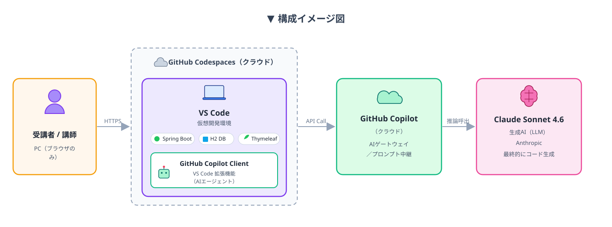
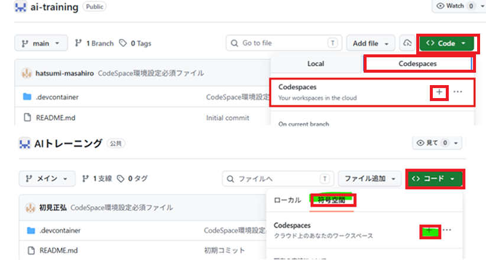
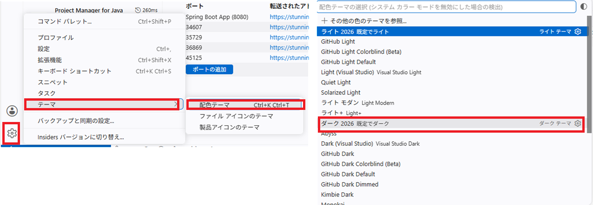
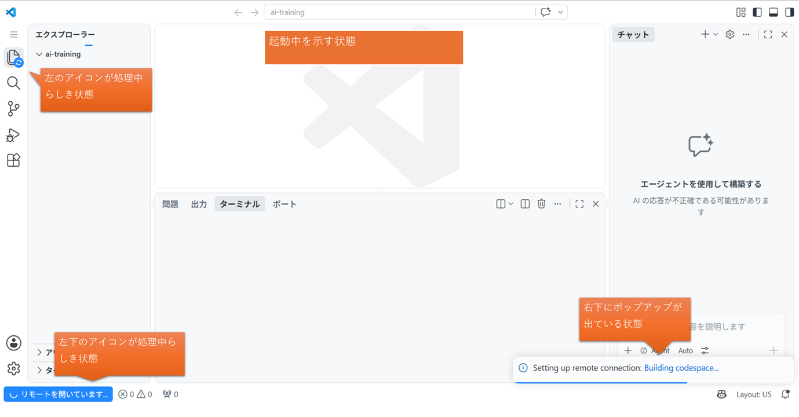
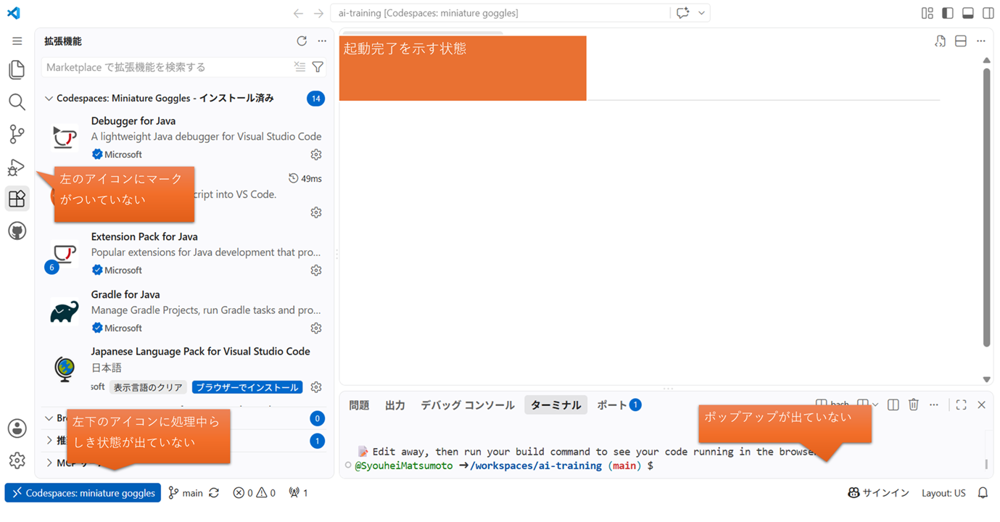
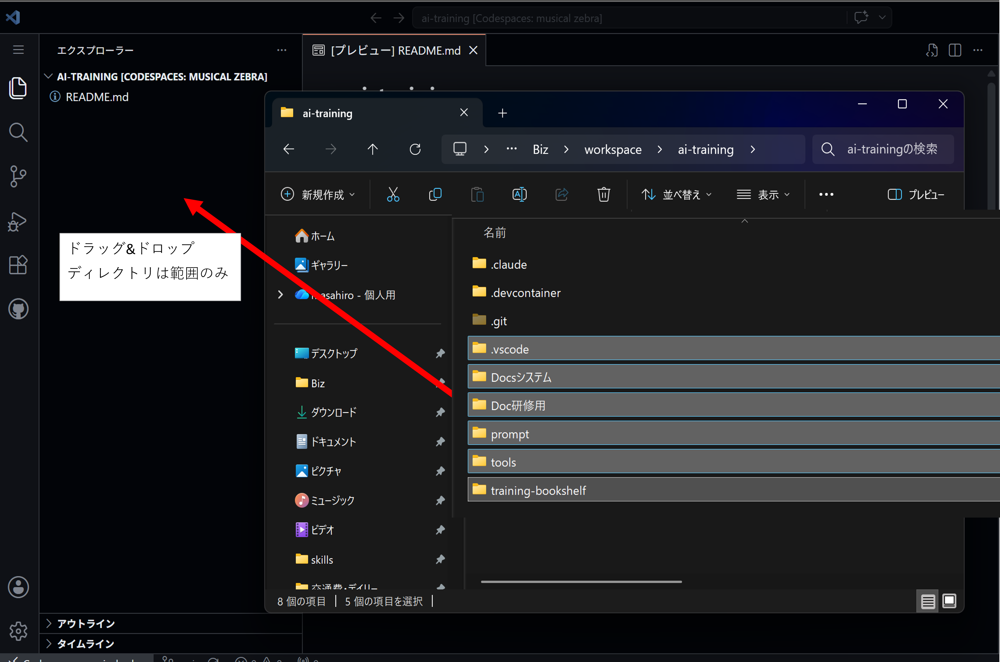
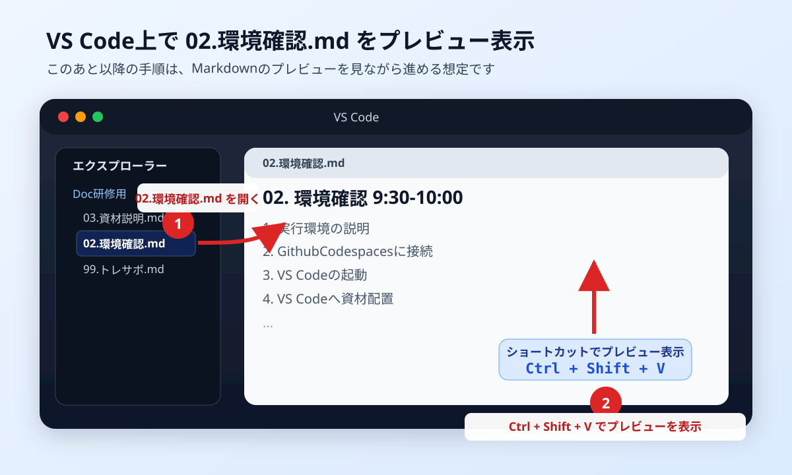

VS-CodeでMDを開いてCTRL+SHIFT+Vでプレビュー表示できます。
事前確認
先に 99.トレサポ.md の説明を実施する事。
1. 実行環境の説明

2. GithubCodespacesに接続
GithubCodespacesのURL にアクセスする。
3. VS Codeの起動
step1:Codeボタン押下 ⇒ CodeSpacesのタブ選択 ⇒ CodeSpacesの＋ボタンを押下
- 日本語版の場合、コードボタン ⇒ 符号空間のタブ選択 ⇒ CodeSpacesの＋ボタンを押下。

★Tips★
- デフォルトは白基調デザインになっていますが、黒基調に変更したい場合は設定マーク ⇒ テーマ ⇒ 配色テーマで変更可能。
- おすすめはダーク2026。お気に入りの配色にカスタマイズ可能。

step2: ブラウザ上でVSCodeが起動するので、起動完了するまでしばらく待つ
※ VSCodeは初回起動時にインスタンスを立ち上げて、必要な拡張機能などを読み込んで起動完了となります。起動中に後続手順を進めると正常に起動処理が行われず、後続手順に支障が出るので注意！
以下、起動中状態と起動完了状態の画面キャプチャを参考に判断すること（不安な点があれば講師に確認ください）。
起動中のサンプル画面

起動完了のサンプル画面

4. VS Codeへ資材配置
step1: ダウンロードした教材の画像のフォルダををVSCode上にドラッグ

step2: VSCode上でマークダウンファイル「02.環境確認.md」を開き、プレビュー表示する
- エクスプローラーから「02.環境確認.md」を開く。
Ctrl + Shift + Vを押してプレビュー表示する。

以後の進め方
以後の手順は、VSCode上でマークダウンファイル（02.環境確認.md）のプレビューを表示した状態で進めてください。